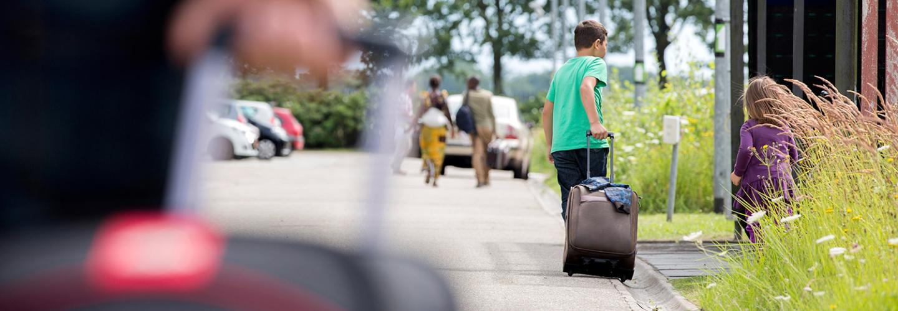

When you are granted asylum, the next step is Family Reunification. You need to apply for the family reunion within three months after getting residence permit. VluchtelingenWerk Nederland (VWN) helps you in applying family reunion. VWN is an institution at your COA location where you are living.
When your family member collects the MVV, the passport must be valid for at least another 6 months. Does your family member not have a passport? Then your family member usually gets a temporary passport (a Dutch laissez-passer). This is a replacement travel document for a single journey.
During the appointment, biometrics will be taken. Your family members also need to take a new passport photo with them.
After arriving to the Netherlands, the family members must register within 3 days in Zevenaar. This can only be by appointment. Make an appointment for family reunification of refugees with IND Zevenaar. Your family members will get their ID cards and residence permit there. If the residence permit is not ready yet, you will receive a letter and then you can collect the residence permit at an IND desk.

Going to Zevenaar for family reunion
Integration:
After getting residence permit, you can already start taking Dutch lessons while you are still at the COA location. You will be registered at a municipality (In Dutch: Gemeente) where you will get a house. The official integration (In Dutch: Inburgering) starts once your Plan Inburgering en Participatie (PIP) is made at your municipality. You have three years time to get the diploma.
Z-route is self-sustainability route. This route is for those people who are generally old and uneducated people. They are unable to pass the B1 Dutch exam. So, they just need to attend the regularly classes for three years. They can also apply for the B1 exam if they are willing to do so. But it is not mandatory for them. Sometimes they are asked to do volunteer work to get involved in the society.
B1-route is for those who want to work. They need to pass the B1 Dutch exam in all the 4 skills (speaking, listening, reading, and writing). They also need to pass KNM exam. Besides that, they take classes to get to know the dutch labor market.
Onderwijsroute is specially for the students who like to study here in English or in Dutch. They need to pass the State Exam Program II (B2 exam), if they wish to study in Dutch or Program I (B1 exam), if they want to study in English. They also take basic Math and English classes. They need to pass Math exam and B1 English test along with B1 or B2 Dutch exam to get the integration diploma.
Onderwijsroute is specially for the students who like to study here in English or in Dutch. They need to pass the State Exam Program II (B2 exam), if they wish to study in Dutch or Program I (B1 exam), if they want to study in English. They also take basic Math and English classes. They need to pass Math exam and B1 English test along with B1 or B2 Dutch exam to get the integration diploma.
Integration comprises of the following: